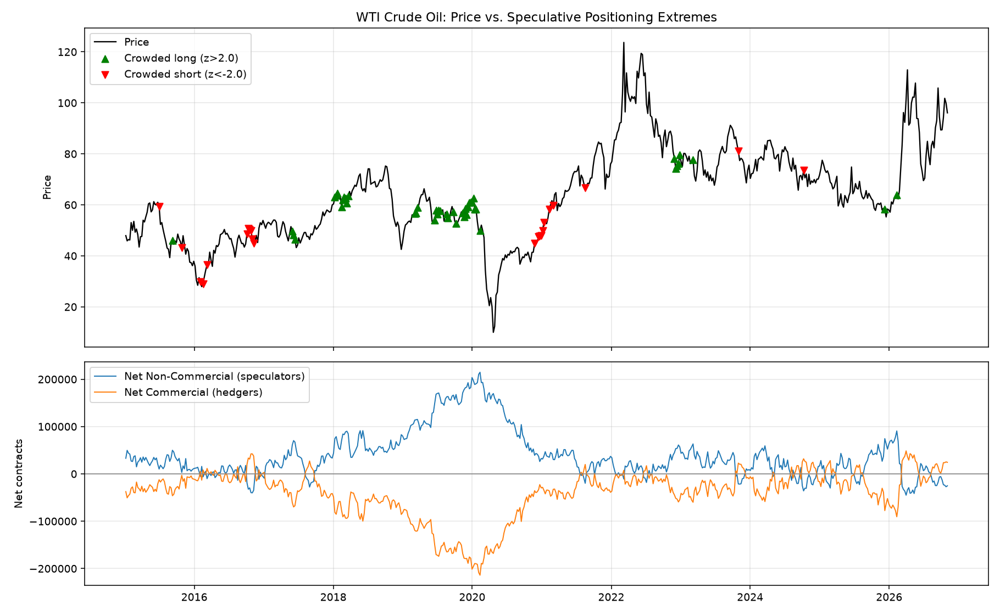
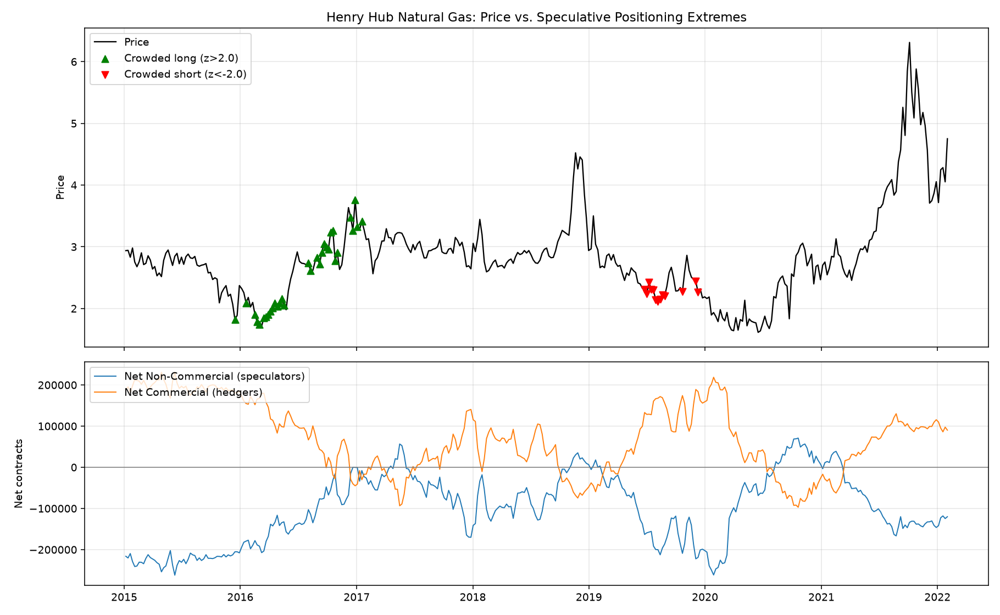
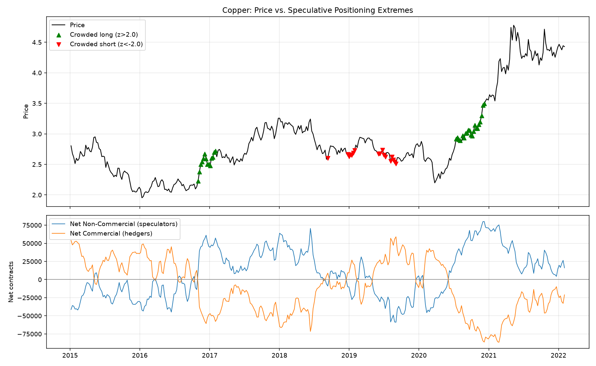
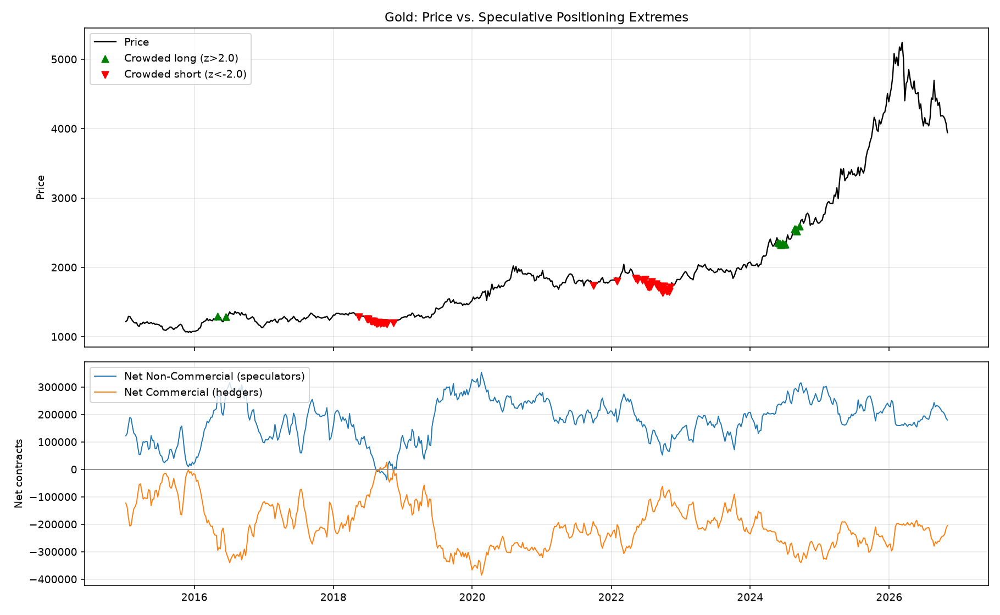
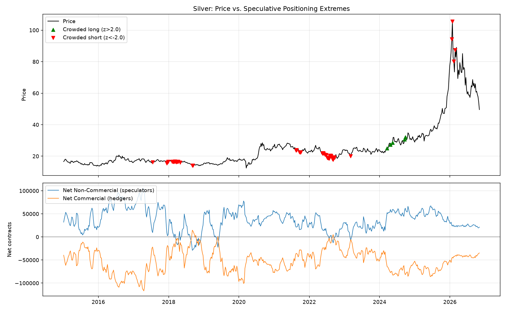
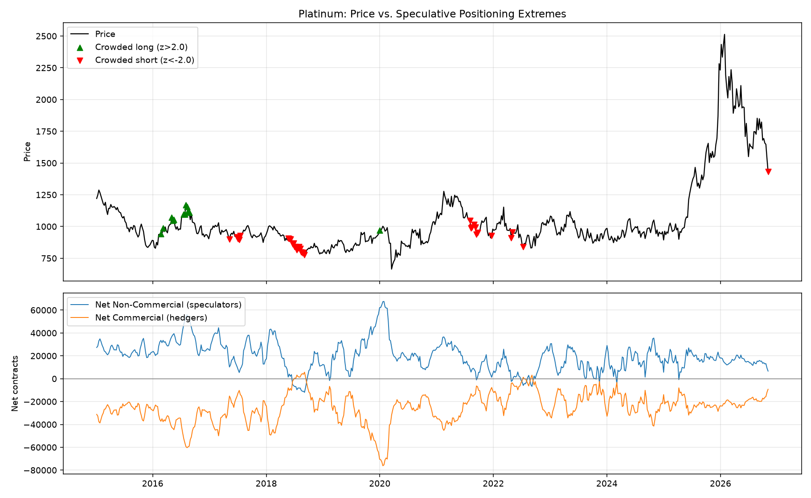
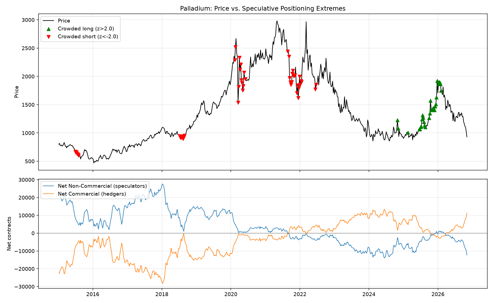
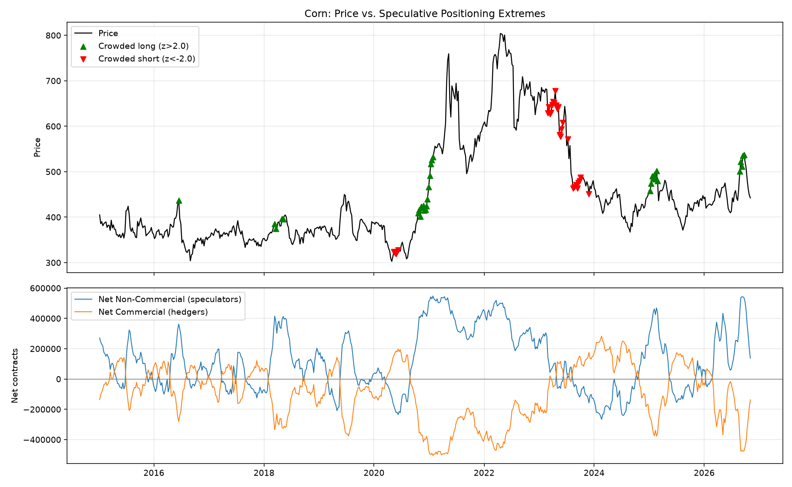
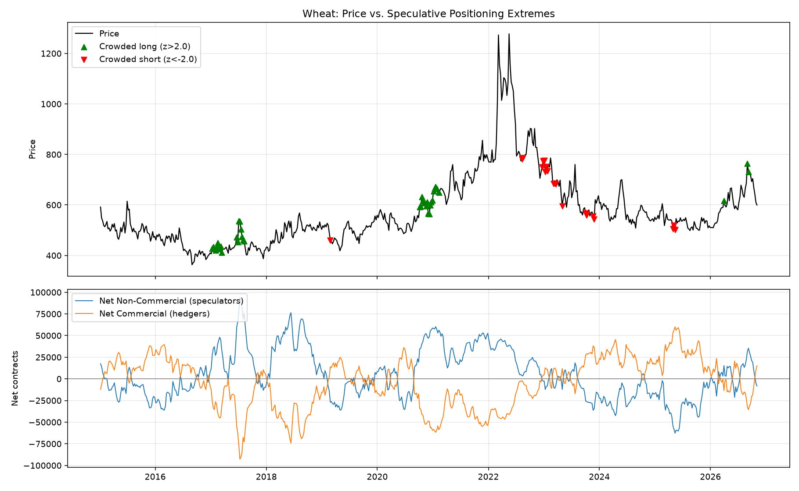
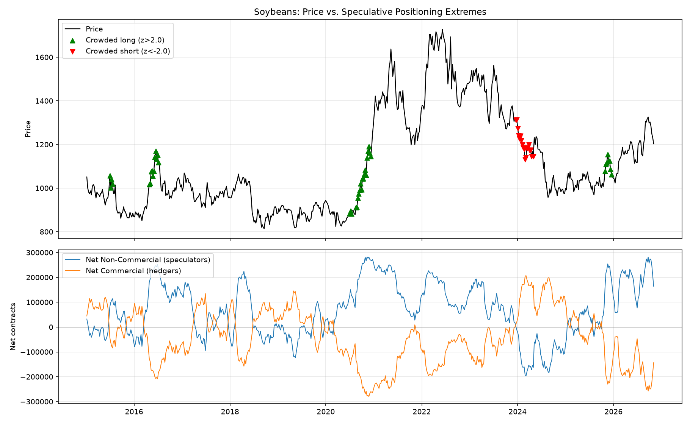

| Market | As of | Price | Spec-Hedger diff (% OI) | Range | Direction | Historical follow-through |
|---|---|---|---|---|---|---|
| WTI Crude Oil | 2026-11-03 | 96.09 | -6.4% | 🔴 RED (5th pct) | specs crowded SHORT vs. hedgers | +4w after crowded-long: +0.6% (n=45) · after crowded-short: +3.1% (n=22) |
| Henry Hub Natural Gas | 2022-02-01 | 4.75 | -18.1% | 🟢 GREEN (37th pct) | specs near their usual positioning | +4w after crowded-long: +3.0% (n=32) · after crowded-short: +2.8% (n=13) |
| Copper | 2022-02-01 | 4.43 | +18.8% | 🟢 GREEN (61th pct) | specs near their usual positioning | +4w after crowded-long: +3.7% (n=35) · after crowded-short: +2.0% (n=17) |
| Gold | 2026-11-03 | 3940.40 | +96.3% | 🟢 GREEN (72th pct) | specs near their usual positioning | +4w after crowded-long: +2.2% (n=12) · after crowded-short: +0.5% (n=40) |
| Silver | 2026-11-03 | 49.59 | +48.5% | 🟢 GREEN (37th pct) | specs near their usual positioning | +4w after crowded-long: +8.7% (n=5) · after crowded-short: +0.0% (n=44) |
| Platinum | 2026-11-03 | 1432.40 | +17.4% | 🟡 YELLOW (10th pct) | specs crowded SHORT vs. hedgers | +4w after crowded-long: -3.6% (n=12) · after crowded-short: +0.5% (n=31) |
| Palladium | 2026-11-03 | 930.00 | -76.8% | 🟡 YELLOW (19th pct) | specs crowded SHORT vs. hedgers | +4w after crowded-long: +2.6% (n=31) · after crowded-short: +1.2% (n=48) |
| Corn | 2026-11-03 | 442.50 | +14.3% | 🟢 GREEN (57th pct) | specs near their usual positioning | +4w after crowded-long: +2.1% (n=33) · after crowded-short: +0.2% (n=29) |
| Wheat | 2026-11-03 | 599.75 | -7.1% | 🟢 GREEN (37th pct) | specs near their usual positioning | +4w after crowded-long: -1.0% (n=39) · after crowded-short: +2.9% (n=20) |
| Soybeans | 2026-11-03 | 1203.00 | +32.0% | 🟢 GREEN (69th pct) | specs near their usual positioning | +4w after crowded-long: +1.7% (n=43) · after crowded-short: -1.2% (n=19) |
"Diff" is the gap between speculator and hedger positioning as a % of open interest. "Range" shows where today's value sits versus its own full history: 🟢 green = typical (25th-75th percentile), 🟡 yellow = elevated (10th-25th or 75th-90th), 🔴 red = extreme (top/bottom 10%). This is a contrarian tilt, not a timing signal - markets can stay crowded for a long time before reversing.









